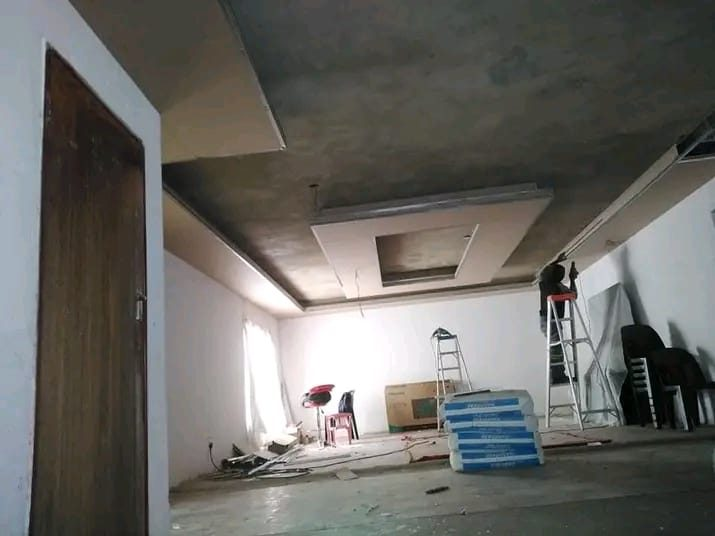

Home Renovations in Parow
Parow has some of the oldest housing stock we work on in the northern suburbs: 1940s to 1960s homes with pressed ceilings, timber floors, small plots and a backyard structure that was added long after the house was built. The plumbing and wiring are usually as old as the walls.
Parow, as we find it
Parow has some of the oldest housing stock we work on in the northern suburbs: 1940s to 1960s homes with pressed ceilings, timber floors, small plots and a backyard structure that was added long after the house was built. The plumbing and wiring are usually as old as the walls.
That changes how a renovation is planned. You cannot open a wall in a Parow house and assume what is behind it matches the drawing. We look before we quote, and we allow for what older construction usually hides: no damp course, shallow foundations, pipes that have been patched more than once.



What we do in Parow
Every service below has its own page. The work is the same as anywhere else in Cape Town; the houses it goes into are not.
Renovations
Kitchens and bathrooms where the plumbing and wiring are being replaced anyway.
Renovations →Damp and waterproofing
Rising damp in old plaster, and leaks at chimneys and parapets.
Damp and waterproofing →Ceiling repairs
Pressed ceilings, sagging board and water stains that keep coming back.
Ceiling repairs →Plastering and painting
Repairing old plaster properly instead of skimming over the problem.
Plastering and painting →The Parow problems we get called for
These come up more often in this area than in the city as a whole.
- Rising damp in walls built without a damp course, showing as paint that blisters low down.
- Old chimneys and parapets leaking where the flashing has perished.
- Ceilings sagging quietly after years of a leak nobody fixed.
Nearby areas we also cover
Get an estimate in Parow
Free site visit, written scope, fixed price before anything starts.